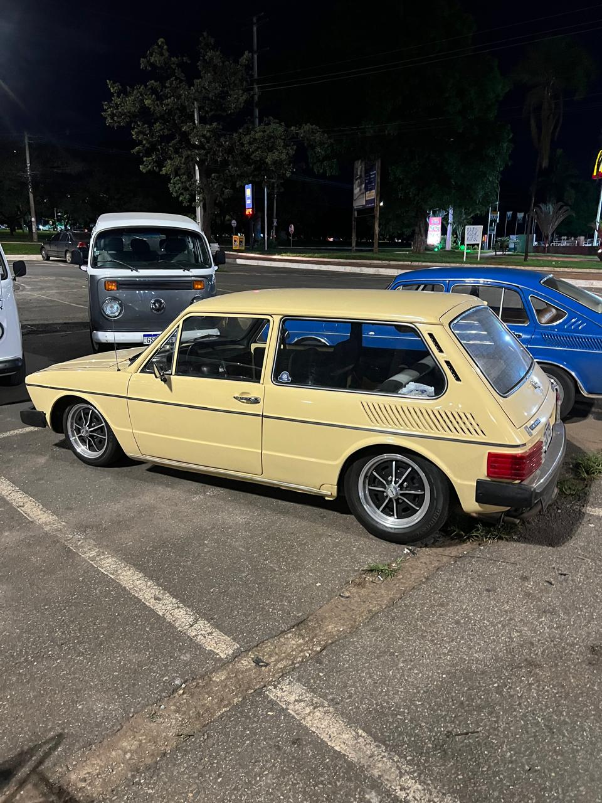
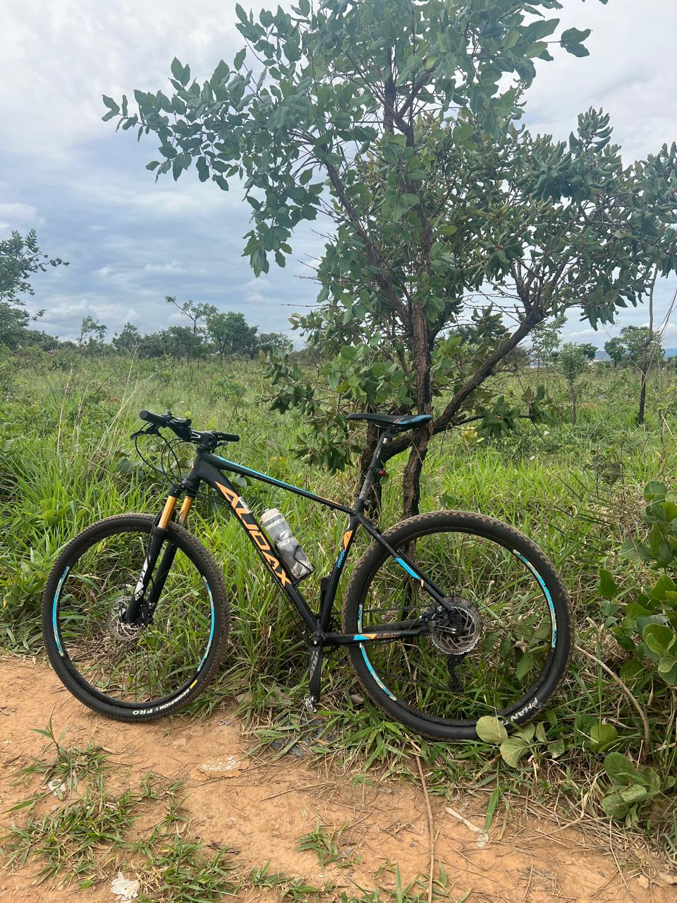

Hobbies
Pra fugir da rotina, tenho alguns hobbies que também acabam estressando as vezes. Um deles é assistir futebol. Torço pro Flamengo e tento sempre assistir aos jogos.
Mas também sou muito fã de carros antigos, atualmente tenho uma VW Brasília 1980.
Nas horas vagas, eu pedalo.
E também futuramente pretendo voltar a jogar bola.


